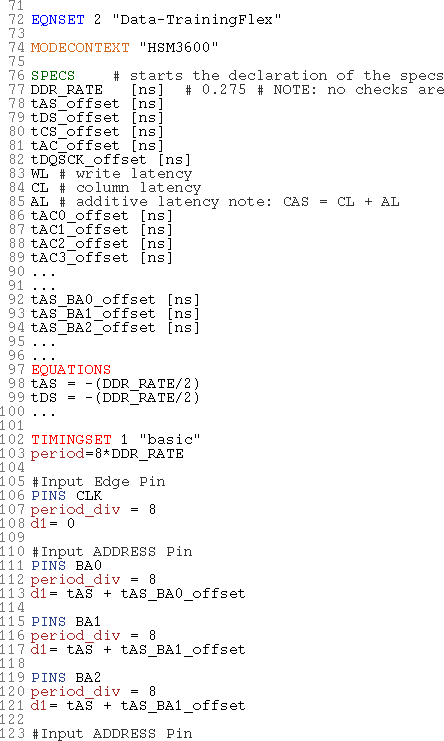

Setting up timing equation for the DataTrainingFlex test method
About this task
Adapt the timing equation file to be used with the test method as described below.
Before you begin
Required is one tsweep spec value for each output and each input pin.
Procedure
Results
The following figure shows EQNSET 2 modified for flex training:
